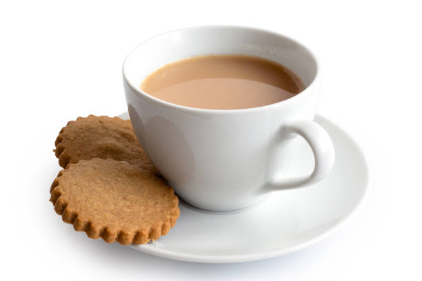

Tea

Description
A beverage made by boiling black tea in milk and water with a mixture
of aromatic herbs and spices.
Ingredients
- 1/2 cup water
- 1/2 cup milk
- 3/4 teaspoon dried tea leaves
- 1 1/2 teaspoon sugar
Steps
- Boil water and milk.
- Add sugar, tea leaves and masala until the mixture becomes dark (about 5-10 minutes).
- The longer you boil, the stronger the chai.
- Strain into teacups to serve.